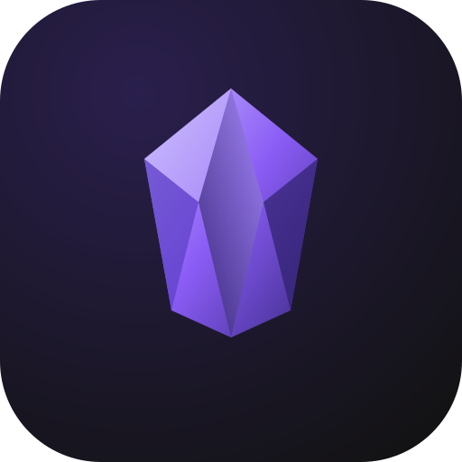
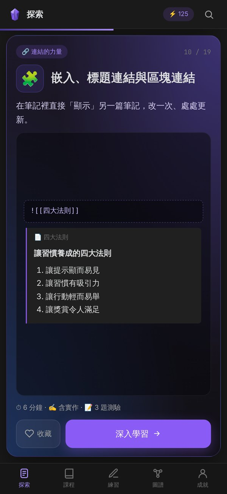
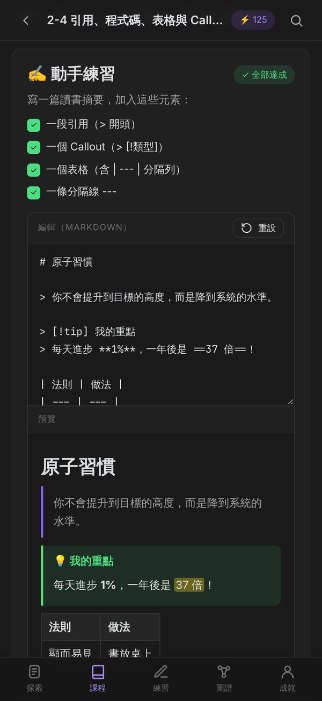
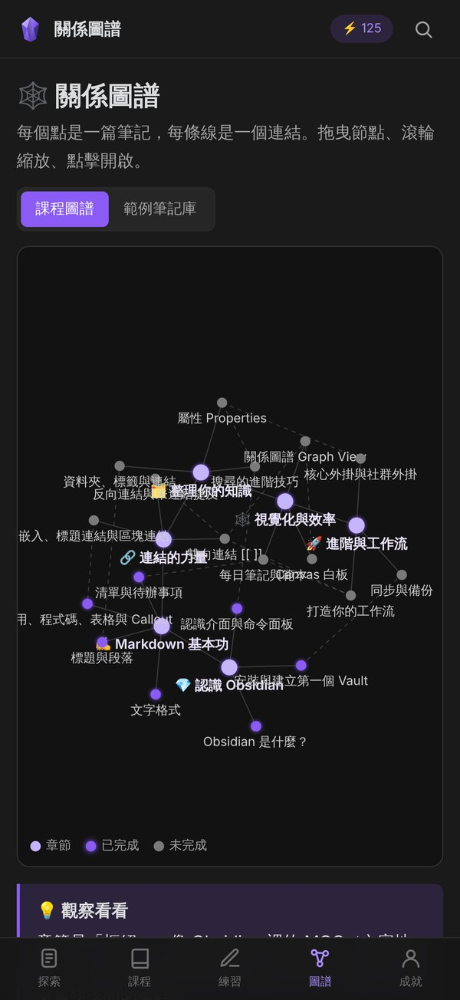

🃏
滑卡探索
像滑短影音一樣上下滑動，每張卡片 30 秒看懂一個功能，附即時預覽。

Obsidianer筆記學院 開始學習Obsidian 很強大，但新手常常卡在 Markdown、雙向連結、屬性這些名詞。Obsidianer 把每個功能做成一張卡片，30 秒看懂；有興趣就點進去，跟著互動課程動手練習、完成小測驗，從零開始打造你的第二大腦。

把 Obsidian 拆成 19 個小功能，每一個都能看、能練、能測驗。
像滑短影音一樣上下滑動，每張卡片 30 秒看懂一個功能，附即時預覽。
6 個章節、19 堂小課，從安裝、Markdown 到雙向連結、外掛與工作流。
內建 Markdown 編輯器與即時預覽，完成練習目標會自動打勾。
每堂課都有測驗與詳解，答對才算完成，學得更扎實。
親手拖曳知識網路，完成的課程會亮起紫光。
累積 XP、等級與連續學習天數，收集 11 枚徽章。
快速瀏覽 Obsidian 的所有功能，看到有興趣的就按愛心收藏。
每堂課 5 分鐘：讀重點、在編輯器動手寫、看即時預覽。

完成測驗、收集徽章，看著你的知識圖譜一點一點亮起來。

不是。Obsidianer 是非官方的學習資源，與 Obsidian（Dynalist Inc.）沒有隸屬關係。我們教你怎麼用 Obsidian，實際寫筆記還是在 Obsidian 裡。
完全免費，沒有廣告，也沒有付費解鎖。
不需要註冊。所有課程都內建在 App 裡，沒有網路也能學。
不會。學習進度只存在你自己的裝置上，不會上傳到任何伺服器。詳見 隱私權政策。
可以。網頁版功能完全相同，用任何瀏覽器打開 obsidianer.onepointzeroone.org/app 就能學，也能加到主畫面當 App 用。